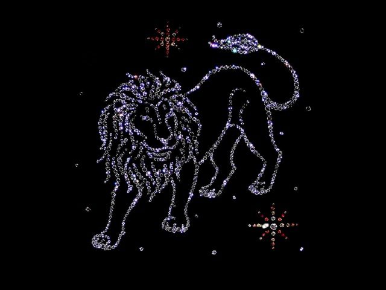

| Овен (21 марта - 20 апреля) - знак, открывающий зодиакальный гороскоп. Своим упрямством и горячим нравом. Представитель огненной стихии поражает. Он всегда идет напролом, не задумываясь о последствиях.Больше об Овнах |
| Телец (21 апреля - 21 мая) - трудно представить себе более упорного, трудолюбивого и склонного к постоянству знака. Характеристика знака Телец показывает что он благороден и независим, старается всего в жизни добиться самостоятельно, не получая ни малейшего удовольствия от случайного везения или чьей-либо помощи.Больше о Тельцах | |
| Близнецы (22 мая — 21 июня) - Его характеристика отличает какой-то особенностью, невероятная двойственность. Он может одновременно быть и шутником- балагуром, и очень серьезным человеком. Больше о Близнецах | |
| Рак (22 июня - 23 июля) - принадлежит к типу весьма чувствительных людей, обладающих тонкой душевной организацией. Он остро ощущает любой неодобрительный взгляд в свою сторону, и сильно переживает по этому поводу. Больше о Раках | |
|  | Лев (24 июля - 23 августа) - благородное создание. Его величественная поступь и снисходительное отношение к окружающим выдают в нем настоящего Царя зверей. Стихия Огня добавляет Льву энергичности и ленивой силы. Больше о Львах |
| Дева (24 августа - 23 сентября) - натура материалистичная. Земная стихия, которая управляет ее духовной основой, заставляет Деву много внимания уделять различным бытовым мелочам. По этой причине представитель такого знака очень критичен к недостаткам других людей и несовершенству окружающего мира. Больше о Девах | |
| Весы (24 сентября - 23 октября) - они обладают высоким уровнем интуитивного интеллекта. Они прекрасные собеседники, их дружелюбию и тонкому чувству юмора можно позавидовать. С окружающими Весы ведут себя довольно открыто и вместе тем мягко, не допуская неосторожных высказываний и стараясь не обижать близких. Больше о Весах | |
| Скорпион (24 октября - 23 ноября) - это самый таинственный и непонятный для окружающих знак Зодиака. Характеристика Скорпионов говорит что среди них можно встретить и великих гуманистов, и законченных эгоистов, материалистов и романтиков, обладателей колоссального интеллекта и очень глупых людей. Больше о Скорпионах | |
| Стрелец (23 ноября - 21 декабря) - это полноправный представитель огненной стихии, и его взрывной темперамент становится тому подтверждением. Этот знак является примером гармоничного сочетания внутренней и внешней энергии. Больше о Стрельцах | |
| Козерог (22 декабря - 20 января) - люди, рожденные под знаком Козерога, отличаются невероятной по своей силе целеустремленностью и стойкости к различного рода жизненным трудностям. Больше о Козерогах | |
| Водолей (21 января - 19 февраля) - может как никто другой удивить знакомых своей экстравагантностью и безумными выходками. Этот человек свободолюбив и любопытен, что не позволяет ему задерживаться подолгу на одном месте. Больше о Водолеях | |
| Рыбы (20 февраля - 20 марта) - это ярчайшие представители водной стихии. Они прирожденные мечтатели и вполне романтичные натуры. Характеристика Рыбы показывает что рациональности в них нет абсолютно, зато можно невооруженным глазом увидеть постоянное строительство воздушных замков и болезненно гуманистические устремления. Больше о Рыбах |